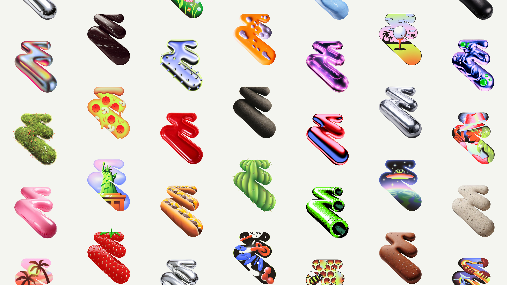
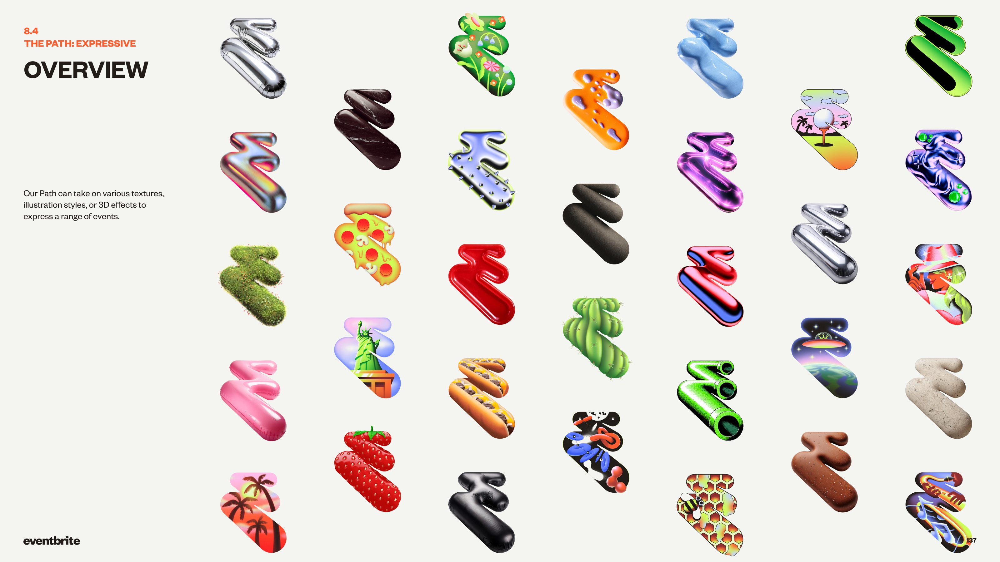

Eventbrite Rebrand
The most significant brand refresh in Eventbrite's history, repositioning the company from ticketing infrastructure to a destination for live experiences.

The problem
Eventbrite was known as a ticketing logo: infrastructure that sat behind other people's events. As the company moved to a consumer marketplace, the brand had to make people want to go out, not just check in.
The approach
Partnered with BUCK on a full visual and verbal identity: a new monogram, The Path, built from three interconnected parts to signal momentum from discovery to the event itself; a brighter Brite Orange with highlighter accents; candid photography of real communities; and a tone of voice defined as boldly optimistic, unexpectedly eccentric, totally tuned in and empathetically human.
Built an Amplified Brand toolkit for marketing (Header Highlighter type, Expressive Paths and Energy Auras) so campaigns, social, email and out-of-home could flex without breaking the system.
Launched with the Get Into It campaign and the redesigned app as one moment.
Results

Leadership
Led the program end to end with the CMO and CPO, owning the agency partnership, the in-house brand team and the translation of the identity into the product.
Credited as SVP, Design in BUCK's published case study alongside the VP Brand, Design Program Director and Principal Designer on the Eventbrite team.